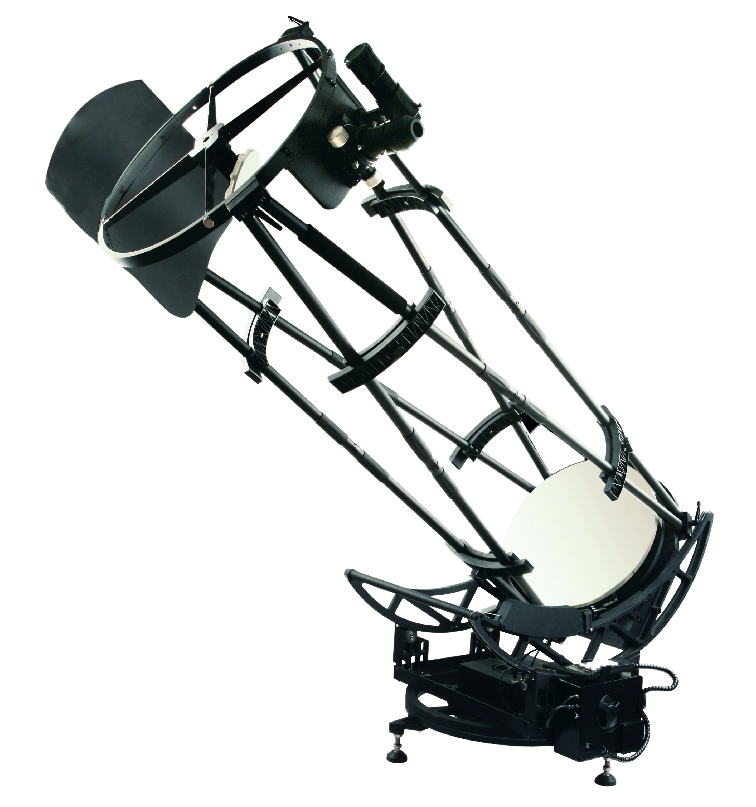

StarGate Dobsonian 20" SynScan
The Sky-Watcher StarGate Dobsonian with its huge light gathering capabilities provides the ultimate WOW factor experience for aficionados of visual astronomy, delivering outstanding performance on both Planetary and Deep-Sky objects. It comes with Sky-Watcher's signature SynScan Goto function which makes our observation experience smoother. The elegant and rigid all-metal truss tube design is easily transportable when unassembled, and can be assembled and ready for use in about 20 minutes. The mount provides motorised operation in both Alt and Azimuth axes, and can slew the telescope automatically, and track over 42,900-night sky objects from the Synscan handset's extensive computerised database. It features Freedom-Find™ Dual-Encoder technology, which also allows the telescope to be moved manually in either axis without losing its alignment or positional information, giving us enormous convenience and flexibility during observing sessions.
QHY533M CCD Camera
QHY9701 is a cooled scientific CMOS camera with GSENSE9701 back illuminated sCMOS sensor. The CMOS has a very wide spectral response. With the characteristics of large pixels, ultra-wide spectrum and low noise, it is suitable for high-end microscopy, micro-optics, biofluorescence, astronomy and other scientific research fields. It has 89% peak QE at 610nm. The high, wide response from NIR to UV makes the QHY9701 a perfect camera for spectrum analysis and spectrum imaging systems. The QHY9701 is also an ideal scientific CMOS camera for Fluorescence imaging.QHYCFW3 Filter Wheel
The QHYCFW3 series filter wheel hosts 7 filters from violet to red in the visible spectrum. QHYCFW3 filter wheels can be controlled by either an independent external program using the filter wheel’s USB port or via a special 4-pin port. When connected to the QHY 4-pin port there is no need for an additional power cable or control program. All of the filter wheel functions can be controlled through the QHY camera.
Equipment